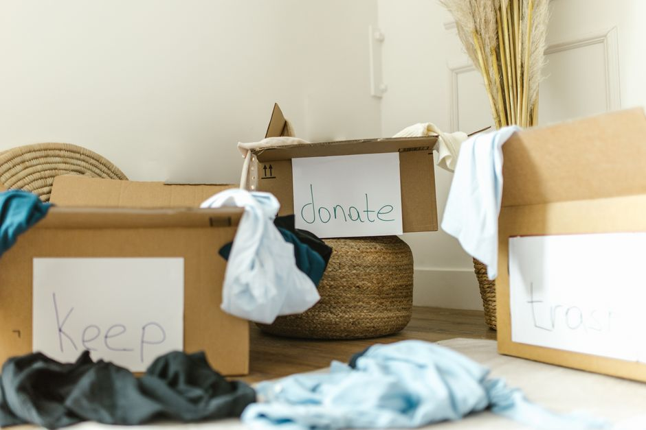

How to Organize Your Clothes Without Losing Space

Photo: RDNE Stock project / Pexels
Storing clothes in a small space is mostly about sorting, folding smartly and using height. Here is a simple method.
1. Sort
Take out all your clothes and divide them into three groups: keep, donate or sell, and discard or repair. Clothes you have not worn in a year are good candidates for donation.
2. Store by category
Group tops, bottoms, underwear and accessories. Put what you wear every day at eye and hand level, and the rest higher or lower.
3. Fold vertically
Fold clothes into small rectangles and store them upright in drawers, like files. You can see everything at once and save space.
4. Use the right hangers
Slim hangers take less room. Keep wide or padded hangers for coats and heavy jackets. Fold sweaters instead of hanging them so they do not stretch.
5. Use unused spaces
- under the bed, in flat boxes with lids;
- above the rod, on a shelf;
- behind the door, with a hook organizer.
6. Store off-season clothes
Put out-of-season clothes in closed boxes and wash them first. Cedar or lavender can deter moths. Avoid mothballs: their fumes are irritating and toxic if swallowed, especially for children and pets.
7. Review regularly
Twice a year, at the change of season, tidy up and remove what you no longer wear.
By sorting, folding vertically and using height, a small closet is often enough for all your clothes.
Recommended products
As an Amazon Associate, I earn from qualifying purchases.